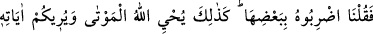
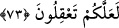

73. “Haydi, şimdi (öldürülen) adama, (kesilen ineğin) bir parçasıyla vurun”
dedik. Böylece Allah ölüleri diriltir ve düşünesiniz diye size âyetlerini
(Peygamberine verdiği mûcizelerini) gösterir.
“Vurun!” emri, “kişi veya insana vurun!” mânâsınadır. O ineğin herhangi bir
bölümüyle ona vurun. Bu parça dili de olabilir. Çünkü dil, konuşma vâsıtasıdır. Veya
kuyruk sokumu olabilir; çünkü o en evvel yaratıldığı gibi, en sona kalacak, yaratılış
tekrar onun üzerine binâ edilecektir. Veya bu “parça”dan murâd vücûdun diğer
âzâlarından biridir. Parça ve bölüm, yarımdan daha az kısım demektir. Mânâ şudur: “O
parçayla ölüye vurdular. O anda o kimse canlanıverdi.” Bu kısım her ne kadar burada
yoksa da, “İşte Allah ölüleri böylece diriltir.” ifâdesi bu bölümün hazfedildiğini; ama
mânâ olarak varlığını gösterir.
Rivâyet edildiğine göre; yahûdîler ölüye o parçayla vurunca o cesed, Allah’ın izniyle
yaralarından kan akar halde ayağa kalktı ve: “Beni amcamın oğulları falan ve falan
öldürdü” dedi. Sonra tekrar düşüp öldü. O iki kişi yakalanarak öldürüldü. O günden
sonra da kâtile mîrâstan pay bırakılmadı.
Mûsâ (a.s.) onlara, ineğin bir parçasıyla o ölüye vurmalarını emretti. “Sihir veya hile
yaptı” demesinler, diye kendisi vurmaktan kaçındı.
“Allah işte böylece; yâni anılan şahsı dirilttiği gibi kıyâmet günü de ölüleri diriltir.”
Biraz önce de söylediğimiz gibi, “O cesede vurdular, o da hayat buldu.” âyetindeki
hitab, maktûlün hayatında iken bulunan yahûdîleredir. Yâni, bu garib yaşayanlar gibi,
demektir.
Burada eğer: “Yahûdîler zâten öldükten sonra dirilmeyi kabûl ediyorlardı, tekrar bu
âyetin getirilmesinin mânâsı nedir?” denirse, şu cevap verilir: “Onlar sözle ve taklîdî
olarak bunu kabûl ediyorlardı. Allah onlara diriltmeyi bizzat göstererek bu inançlarını
pekiştirmek için bu âyeti getirdi. Nitekim Hz. İbrâhîm de Allah’dan ölüyü diriltme
konusunda delîl istemesinin sebebini: “Kalbim itminân bulsun diye” (el-Bakara,
2/260) ifâdesiyle belirtir.
Âyetteki hitâbın Peygamber (s.a.) zamanında ve âyetin inişinde hazır bulunan ve
öldükten sonra dirilmeyi kabûl etmeyen yahûdîler hakkında olması da mümkündür. O
zaman “kavl” (söz) takdîr etmemize hâcet kalmaz. Bilakis “İneğin bir kısmı ile
vurunuz!” bölümünde hikâye sona erer.
“Allah, herşeye kâdir olduğunu gösteren delillerini size gösterir; umulur ki, siz de
yola gelirsiniz.” Âyetin mânâsı şudur: Akıllarınızı kemâle erdirmesi, bir kişiyi
canlandırmaya kâdir olanın herkesi canlandırmaya kâdir olacağını bilmeniz,
nefislerinize uymaktan uzak kalmanız ve emrettiği hususlarda kendisine itâat etmeniz
için Allah Teâlâ âyetlerini gösterir.